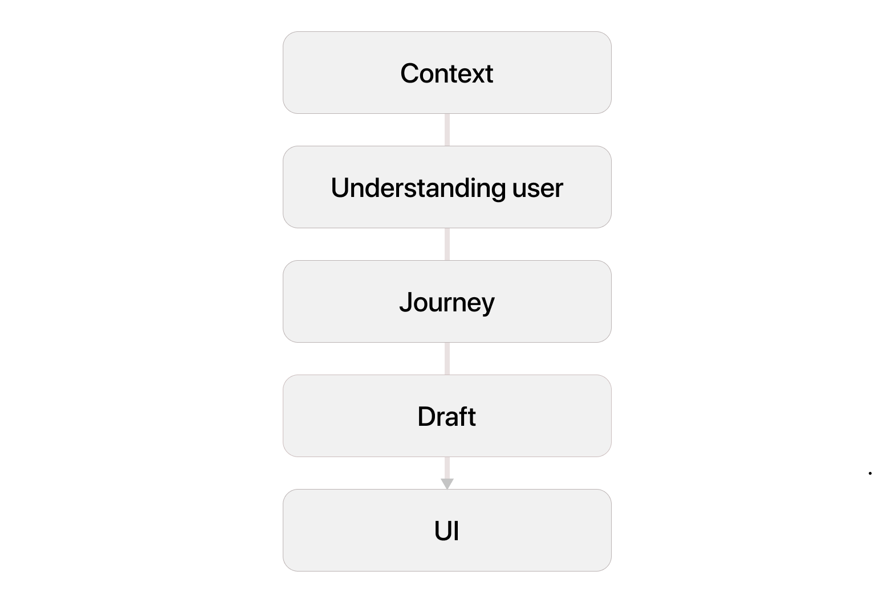
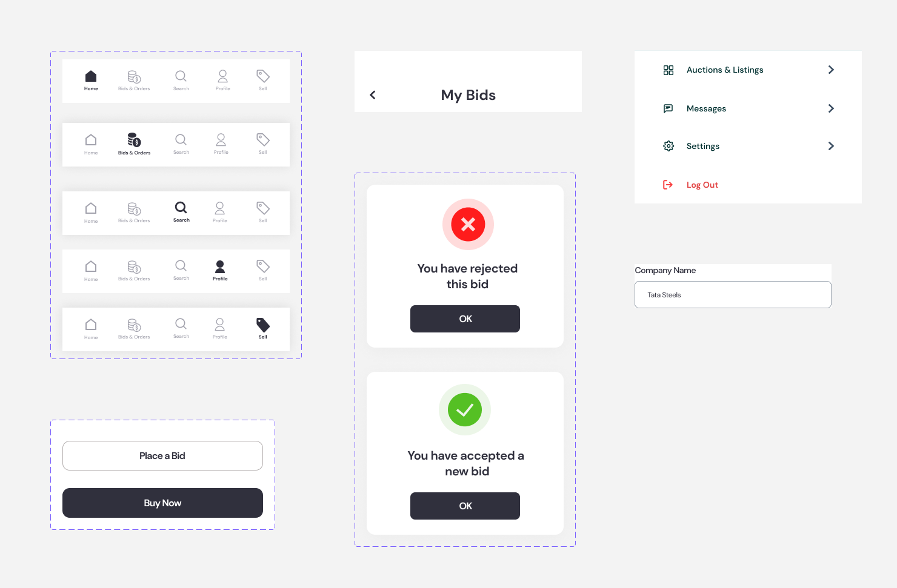

Scrapp is a ventures started in middle east and gulf region. Basically they allow users to buy or sell the bulk amount of scrap around UAE, This idea has many flaws as well as advantages.
Scrapp (scrap business) is the upcoming application as well as a webiste focus on the companies as users to buy or sell bulk amount of scrap for example 200 ton steel scrap, Bulk amount of iron scrapp, etc. The deal demand a high revenue transactions and all, it was a different experience when compared to the normal e-commerce applications
They need almost 5 different applications for users, employees, drivers, pickers, packers with consoles and admin dashboards. Here I am showcasing only one application
The Problem
This application contains a website too. Hence the client needs exact same design for both of them. Also they need biding system to be implemented, for that they want users to pay downpayment first and on next session they need to pay final payment. It was a bit difficult task for us. We started brainstorming sessions about the possibilities and created the feature list of it.
Through the analysis, I was able to identify some clear usability issues and pain points. I listed all of them to validate them after my User Research.
Some key pain points-
- Biding confusions
- Payment gateway for the huge amount
- Buyer or Seller, Who will deliver this much bulk scrap?
- Downpayment criterias
The Task
- To create Basic Design Guidelines including Typography, Color Palette
- To design Product Details Page (PDP), Cart or Bag Screen (where a bunch of products is added for trial)
- To create Post-order journey screens (tracking after order after placement, rejecting or accepting the products post-trial and making payments for accepted products)
- To create Information Design and Hierarchy (Communicate the entire Trial Model, Trial Fees, Conditions,
The flowchart below outlines the core stages of my design process. I chose to take an iterative approach, testing and improving the design throughout. 
Defining Pain Points
Pain Point 1
The bidding process is one of the major pain points, because many clients can involve in bidding process and owner has to choose wisely the bidder. After that owner has to collect Downpayment from the bidder.
Pain Point 2
Huge payment, This is the another challenge for me, because huge money transfer is not possible is normal payment gateways, and payments may from outside of the UAE. Hence we need to figure out this situation also with limited resource and finance clients have.
Pain Point 3
Buyer or Seller, Who will deliver this bulk amount of scrap? Deal should close only after the item reached buyers side. Then only buyer can pay final amount. And this much huge amount will take more time to process also.
Pain Point 4
Downpayment and Final payment, Both are complex task that, the downpayment should hold by some kind of third party like stripe. This much huge amount may cause additional taxes and processing fee, though client has not interested in it.
Ideation
To understand more, I made a quick process map — focussing more on the order part and less on the User navigation while exploring
Creating Wireframes
By the way, I started working in wireframes too. There are still some points to be locked, but due to its limited project time

Brand Guidelines
The user obviously tends to search for their favorite food for sure, The older design doesn't have functionality for search. Likewise, the location is also a big pain point in the older version, Because users may be traveling or they are ordering food from their office in the neighboring city. Hence I added a location page, and users can change their location on the homepage itself

Building Components
The best part of a design system is making components, this process helped me to faster design time 3x than the manual corrections. almost all buttons, fields and Navigation are made up of components. All these component fields and boxes are auto aligned, hence the text overflow will automatically manage by the component system.
Features Implemented
Some important screens with its logic is explained here, where users can easily track the process and these feature will give users a reason to return to the app, eventually leading to better engagement.
Some additional screens
Some important screens are depicted below, and can get a idea of how this process works, the entire design file in figma in attached with this link
Conclusion
Finally, Creating an omnichannel platform was hardly memorable. The task of implementing a better usability for a well-established application became something bigger and The Userflow we created helped us to maintain the workflow too. Pointed out the crucial pain points and rectified them using some simple but most convincing ideas. And it witnessed an excellent application for the client, the journey was inspiring us to do more good works that demand problem-solving, Analysing, Sketching, Usability testing, Affinity Mapping, Designing, Depicting user flow, etc.